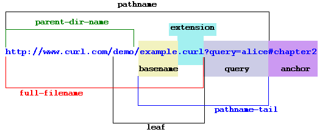

URLs, Links, and Iframe
URLs
A URL is a uniform resource locator and most people are familiar with it and the HTTP protocol for web pages such as http://google.com Here is a diagram that deconstructs a URL:
All travesal of the web (whether using text links, image links, forms, etc) use URLs to locate resources for the browser to render next.
Links
The a anchor tag converts text to a link. For example, this link to google. It takes the required href attribute, which is the URL to link to.
Instead of adding URL with protocol at the start (like "http"), you can use file paths to point to local content. An example of that same localization with a different tag is in the link tag in the header here, which loads stylesheets to format the page.
The target attribute of a anchor tag determines where the browser opens the link. This accepts several values.
- _blank - opens the link in a new window
- _self - opens the link in the current frame (the same as default behavior)
- _parent - opens the link in the parent frameset (as with iframes)
- _top - opens the link in the full body of the window
- framename - opens the linked document in a named frame (as with iframes)
Anchor Bookmarks
Anchors bookmarks can link to a specific point in the current page, causing the browser to scroll as necessary when clicked. See the source code in this link for an example.
Iframes
The iframe tag is an element which imports html from other pages. If it points to a full page, that is with an html tag, it acts as a virtual tab in your browser. It loads a URL from it's src attribute. It is rendered in the current page, and can be layed out like any other block element. These are somewhat cludgy, and should be avoided in most cases, but they do have their uses. Despite the fact that it loads its content from another site, and so it doesn't need any sub-elements, it cannot be specified as a single tag, as it will consume all other content from that point on in the page.
Here is a sample
The frameborder attribute can be used to hide the border, by setting it to 0.
Links in the iframe content will have the root path of the iframe content, not the parent page. The _target attribute of an anchor can be set to _parent to cause the inner links to refresh the page's url, isntead of the iframe URL.
This tag can be used to inject navigation elements into all pages in a site (reusing the same navigation at each page), but again this is not a preferred solution.